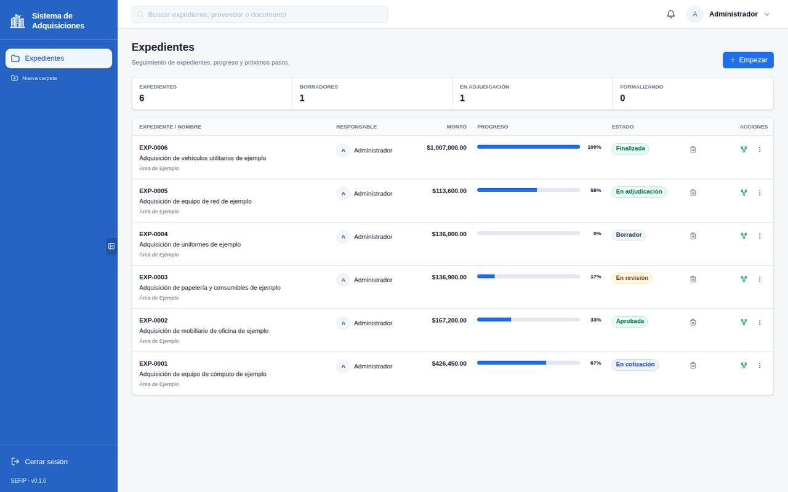
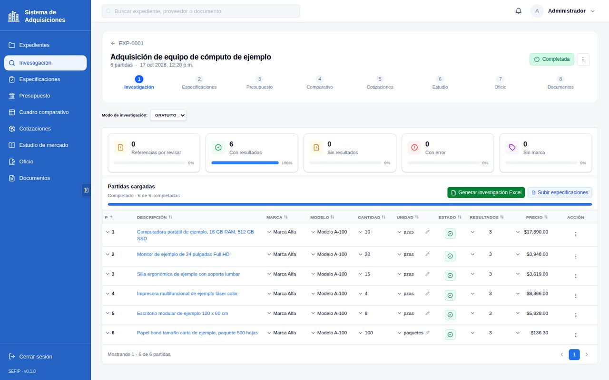
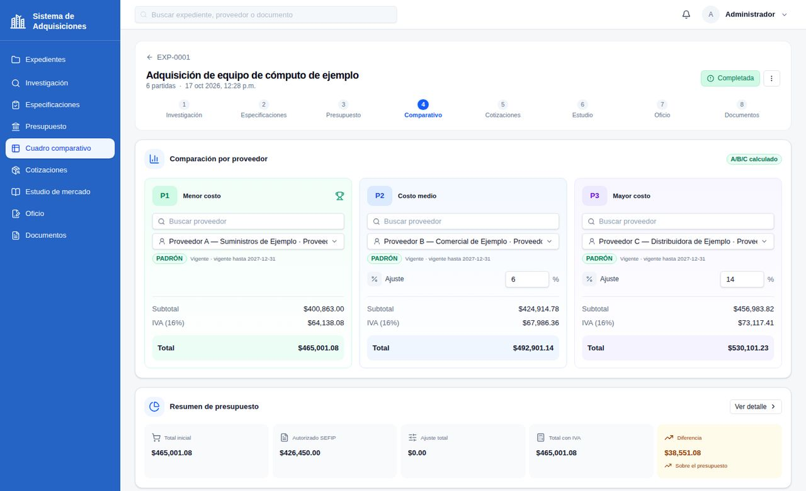
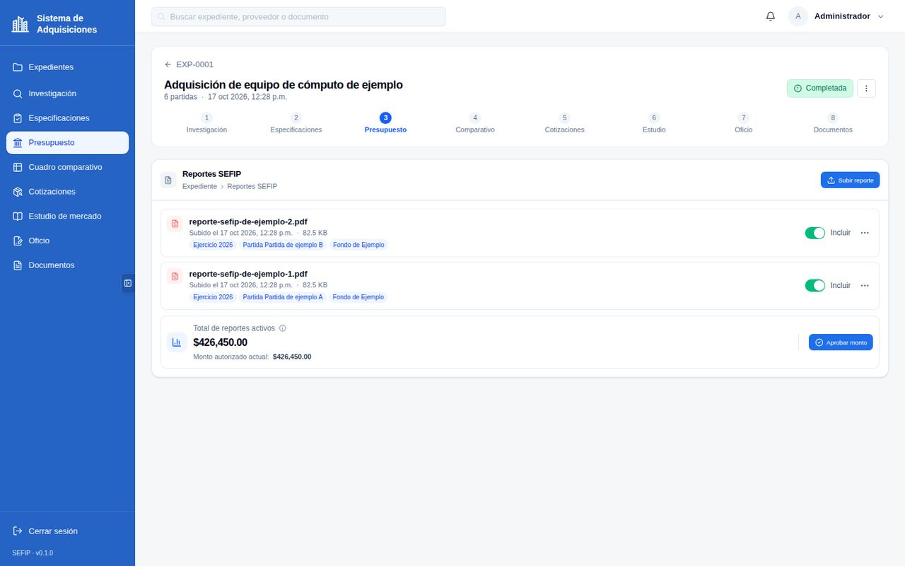
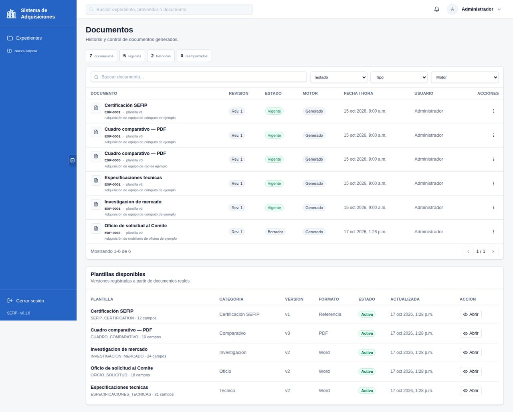
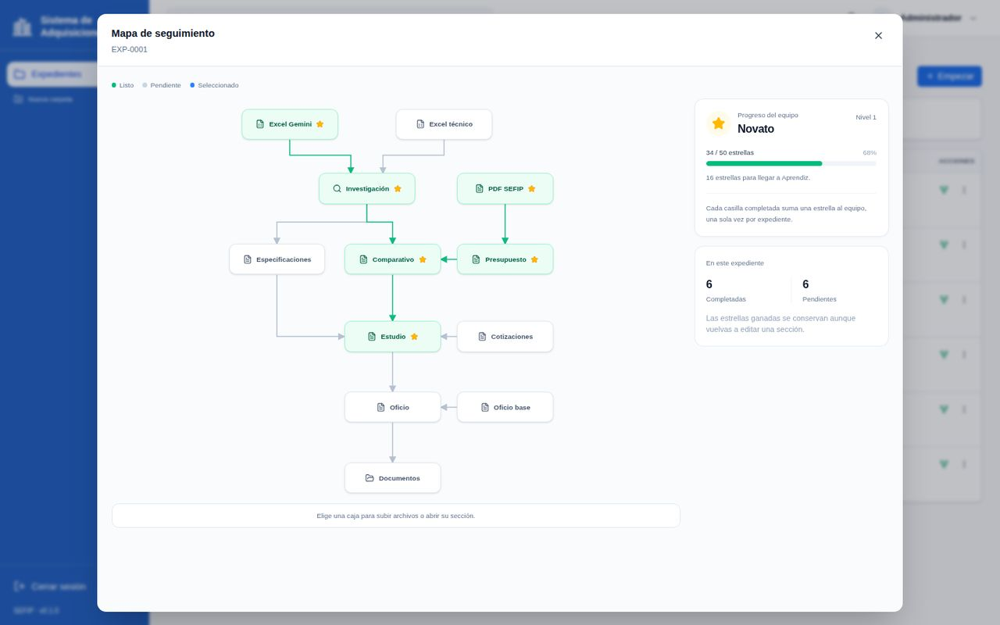
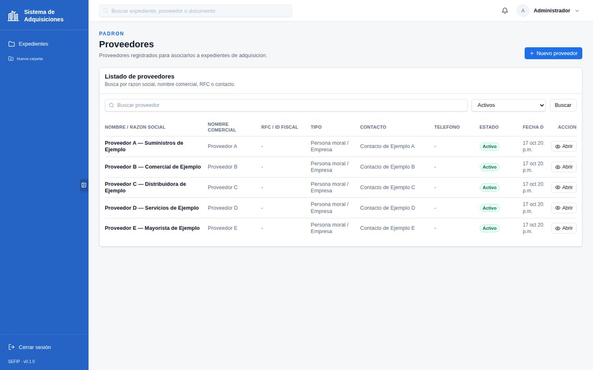

1 · Preparar
Se crea el expediente y se fijan las especificaciones técnicas.
Sistema de Adquisiciones
Expedientes, investigación de mercado, cuadro comparativo, presupuesto y documentos oficiales conectados en un flujo de ocho pasos — sin hojas sueltas y sin capturar el mismo dato en cada documento.

Las capturas muestran el sistema trabajando con datos ficticios de demostración.
El flujo
Se crea el expediente y se fijan las especificaciones técnicas.
Investigación de mercado con propuestas comparables: P1, P2 y P3, cada una con su evidencia.
Cuadro comparativo acoplado al presupuesto autorizado, con ajustes visibles.
Documentos oficiales generados desde los mismos datos del expediente.
El problema
Cotizaciones, estudios y oficios viven en carpetas, chats y hojas de cálculo que nadie puede rastrear.
Los mismos montos y nombres se capturan otra vez en cada formato — y cada copia es una oportunidad de error.
Cuando un auditor pregunta cómo se eligió un precio, la respuesta tarda días de búsqueda en archivos.
Por dentro
Cada partida reúne propuestas comparables y las ordena: P1 es la propuesta que cumple todos los requisitos, y su precio se vuelve la referencia de toda la compra.

El cuadro comparativo calcula los tres escenarios contra el presupuesto autorizado y muestra cualquier diferencia a la vista — sin ajustes escondidos.

Los reportes de presupuesto se activan por expediente y el monto autorizado se aprueba una sola vez; el resto del flujo lo respeta.

Oficios, estudio de mercado, cuadro comparativo y formatos se producen en Word, PDF y Excel desde el propio expediente — el dato se captura una vez.

Seguimiento y proveedores

Cada expediente tiene un mapa visual de sus etapas: qué está listo, qué falta y el avance del equipo.

La dependencia trabaja con sus proveedores registrados; su información se captura una vez y se reutiliza en todos los expedientes.
Documentos generados
Los documentos se generan en Word, PDF y Excel con los formatos, apartados y firmantes propios de cada dependencia.
Adaptable
Formatos, apartados, firmantes y reglas se configuran por dependencia — ninguna trabaja igual que otra, y el sistema lo respeta. El acceso es por usuario, con roles de administrador y operador.
Solicita una demostración guiada. Los usuarios autorizados pueden abrir el sistema directamente.